<div class="project">
    <h2>Data Breaches in Top Tech Companies (2022)</h2>
    
    <button onclick="toggleDetails('project5-details')">Click here to view Data Breaches in Toptech Companies project details</button>
    <div id="project5-details" class="project-details" style="display:none;">
        <!-- Detailed content about project 1 -->
        <h2>Data Breaches in Toptech Companies</h2>
        <p>The primary goal of our project is to construct a bubble chart that accounts for organizations 
            and information lost due to hacking techniques such as email, SSN, credit card, Personal 
            Details, and Full details. Following that, we want to use a bar chart to show the company name 
            on the x-axis and the amount of data lost in millions on the y-axis. Finally, we created a donut 
            graphic to ascertain how many businesses were compromised using a specific hacking 
            technique </p>

        <h3>Motivation</h3>


        <br>
           <p>The critical importance of information security and privacy cannot be overstated in the evolving landscape of global business, where technological advancements bring both benefits and challenges. Despite proactive measures, data breaches pose persistent threats, and increasing awareness and strategic actions are paramount. Learning from real-world examples like Equifax and Yahoo, it becomes evident that businesses and individuals must be vigilant and adapt to the dynamic cybersecurity landscape. Understanding the human element in data breaches, our study emphasizes the need for proactive education and visualization to empower users and organizations in safeguarding sensitive information. The journey towards a secure digital future requires collective commitment, resilience, and continuous learning.</p>
            <br>

        <h3>Related Work</h3>
        <br>
        <p>The research paper we took as a reference is “World’s biggest Data breaches and hacks.” In this 
            Contemporary era, data plays a significant role. To perform some tasks, the primary thing 
            needed is data. Besides advantages, there are vulnerabilities present in data, and this 
            information increases security threats to all individuals. All these points dragged our attention 
            to choose this particular topic. They have considered various organizations that are attacked by 
            data breaches, and the year of the incident and the exciting story is shown visually, which 
            fascinates us. The size indicates the record lost in the particular company.
            Moreover, it is linked to types of data sensitivity that caused these data breaches in the 
            subsequent visualization they have created. They have used a high-end tool for creating 
            beautiful and interactive data visualizations and stories using VIZsweet. There is only a little 
            data present in this related work, so Dr. Federico suggested we focus on issues we had while 
            doing bubble charts and bar charts. At first, we couldn’t make it more interactive as we had 
            chosen the design choices ideal for our data. Moreover, he suggested that part of our 
            visualization should be modified to address our problem. Finally, considering all his 
            suggestions, we tried to improve our project and make it more interactive.
            
            </p>
        <br>
        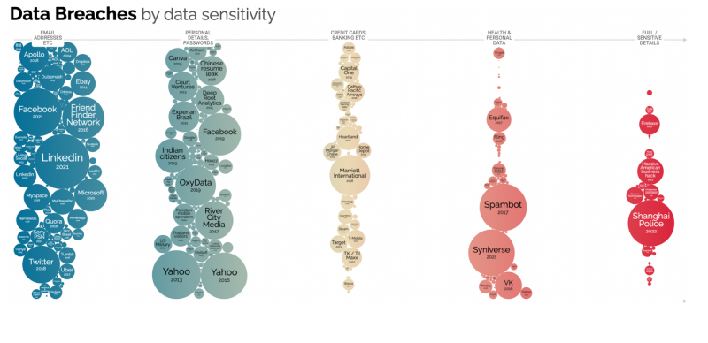
        <p class="image-label"><strong>Sample visualization from the reference paper</strong></p>
        <br>
        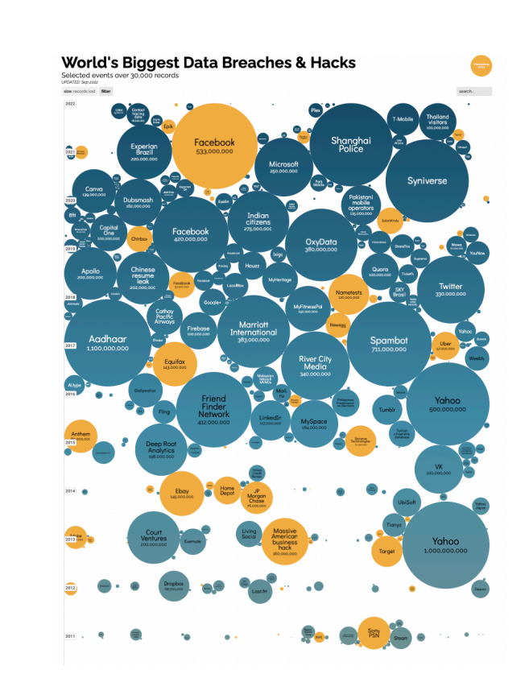
        <p class="image-label"><strong>Another visualization from the reference paper</strong></p>
        <br>

        <h3>Data Collection</strong></h3>
        <br>
        <p>For raw data collection, we first reviewed the news and articles about data breaches in 
            different countries in the last couple of years. After that, we got some pointers to head toward 
            actual data.
            The actual data we collected was taken from this link, but we worked on it for cleaning data 
            and some rectification of data. Here are some other links and references we used to collect the 
            data</p>
        <br>
        <ul>
            <li><a href="https://docs.google.com/spreadsheets/d/1wPgM8ye1AUTVxlZOFsyiKEPWp6iFt34xpp2XA5iM6P0/edit#gid=25233212" target="_blank">Link 1</a></li>
            <li><a href="https://docs.google.com/spreadsheets/d/1i0oIJJMRG-7t1GTmr4smaTTU7988yXVz8nPlwaJ8Xk/edit#gid=2" target="_blank">Link 2</a></li>
            <li><a href="https://www.ibm.com/reports/data-breach" target="_blank">Link 3</a></li>
            <li><a href="https://www.statista.com/statistics/273550/data-breaches-recorded-in-the-united-states-by-number-of-breaches-and-records-exposed/" target="_blank">Link 4</a></li>
        </ul>
        <br>
        <p>After completing the data cleaning steps, the questions we planned to address are:
            <br>
        <strong>1) The number of accounts or data thefts taking data sensitivity or hacking type into 
            account in different organizations?</strong>
        <br>
        <strong>2) Variations of data lost as per year in particular organizations?</strong>
        <br>
        <strong>3) Total count of particular sensitive data with comparison of organizations?</strong>
        <br>
        <h3>Exploratory Data Analysis</h3>
        <br>
        <p>Initially, we could not design grouped bar chart and bubble chart interactively, and we thought 
            of adding a donut chart, but at first, we didn't add it as it needed to be simpler. But after taking 
            suggestions from Dr. Federico and the help of assignments he gave helped us a lot. He made us 
            learn javascript and any libraries inside javascript to create the visualization. He made us play 
            with the data in all possible ways. At first, he allowed us to use the data we took as a reference 
            and make prototypes for our visualizations using tableau To get the required visualization. Then 
            the fundamental part started. Firstly, we have begun using CSV files. We created a duplicate 
            CSV file to make a bar chart, bubble chart, and donut chart. It has helped to get desired output 
            for our visualizations. Secondly, we created a JSON file and created x-axis and y-axis 
            coordinates and grid cells to make our data look more clearly in our bar chart. We used labels 
            to show hacking methods and what organizations got hacked, and the count of the record lost 
            is also demonstrated in the bubble chart. The donut chart shows the total count of hacking 
            done in various organizations.</p>
        <br>
        <h3>Design Evolution</h3>
        <br>
        <p>During every milestone, we can see changes in our project. He constantly gave suggestions and 
            ideas to implement the project. After developing interactions and making them more 
            interactive, we still needed help with missing names for axes and legends. We then crosschecked by asking our professor, and also we discussed more concepts regarding the downside 
            of our project and collected more information to make it perfect. Finally, All our results came 
            the right way, and we gained all the critical insights. These insights are used until our project's 
            end and help us get desired outputs.</p>
        <br>
        <h3>Initial proposal work</h3>
        <br>
        <h4>Visualization 1: Bubble Chart</h4>
        <br>
        <p>A bubble chart will display relationships and distribution for the number of accounts or data 
            thefts, taking data sensitivity or hacking type into account. However, in this variation, we'll use 
            bubbles in place of the data points. To represent a third kind of data, we will also alter the size 
            of the bubble. A category axis is not used in a bubble chart. Instead, it displays the data sets as 
            X-, Y-, and now Z-values (bubble size)</p>
            <br>
        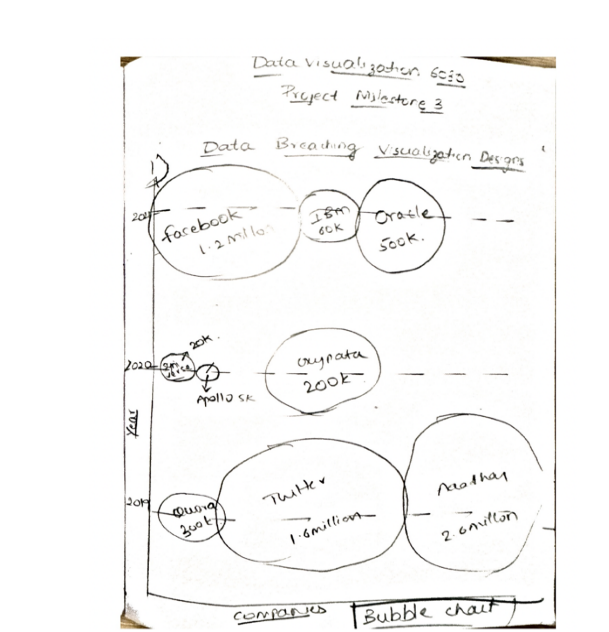
               <br>
        <h4>Visualization 2: Multi-layer pie chart</h4>
        <br>
        <p>The infographic below shows a multi-layered pie chart that shows variances in data loss in several 
            industries. We can see the web activity sector on the top layer, and the financial industries that 
            fall under each primary category are on the bottom. A thin layer in the middle divides all 
            government sectors into three categories. It takes some planning to have all the classes fit 
            together and be simple to grasp in this sort of data visualization, which makes it more challenging 
            to produce than other types. Technically speaking, this representation consists of three pie charts 
            stacked on top of one another.</p>
        <br>
        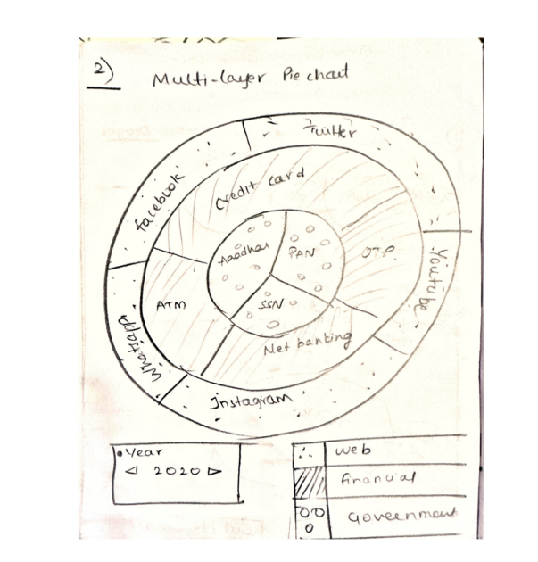
               <br>
        <h4>Visualization 3: Polar Chart</h4>
        <br>
        <p>Polar graphs have a circular foundation, but the data is plotted differently. Wedge shapes extend 
            from the center rather than join points together. The main visual distinction is present. Because 
            the data values are so dissimilar, we choose a polar graph. Otherwise, it could not be easy to read 
            quickly. It is ideal for measuring the number of users who ceased using services after data 
            breaches.
            </p>
        <br>
        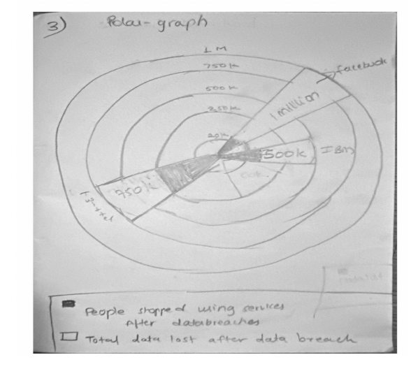
               <br>
        <h3>Prototype:</h3>
        <br>
        <p>Dr. Federico asked us to write the code in a JavaScript file. Then we started using d3 to do all 
            visualizations. While working on our visualizations, initially, we encountered some issues, but 
            later, with the help of Dr. Federico‘s suggestions and assignments, we tackled the problems 
            that we had before. Halfway, we somehow managed to create the same graphs that we 
            thought back, but we felt a simple bar chart for comparing companies and records lost from 
            2017-2022 would be appropriate to visualize our dataset. Another thought was that the donut 
            chart would suit the given dataset more instead of a multi-layered pie chart. But the bubble 
            chart remained as it was, leading to our prototype's design</p>
        <br>
        <h4>The number of accounts or data thefts taking data sensitivity or hackingtype into account in 
            different organizations?</h4>
        <br>
        <p>Here, we attempted bubble charts to display data lost in data sensitivity, such as email 
            addresses, Social Security numbers, credit cards, and other personal information, distinguished 
            by distinct colors.
            Additionally, the sizes listed in the chart below imply the amount of data loss. The data loss 
            increases with size. There is a drop-down box on the lower left side of the screen where we 
            may view data losses broken down by years. Also, we added a legend for the given visualization
            to show various data sensitivities in color</p>
        <br>
        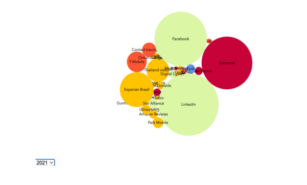
            <br>
        <h4>Financial lost caused for companies categorized by sectors as well as fundsallocated for data 
            lost</h4>
        <br>
        <p>Using a grouped chart, we aimed to show financial losses and the funds allotted for them. We 
            then used color to distinguish between the two. The color light green represents cyber funds, or 
            money allocated by cyber security to enterprises, while the other hue represents a financial loss 
            for businesses. We tried to display cost in millions on the y-axis, showing numerous tech gains 
            on the x-axis, including Amazon, Facebook, Twitter, LinkedIn, Microsoft, etc. Also, we have 
            horizontal grid lines, which will help to learn the exact numbers for both bars</p>
        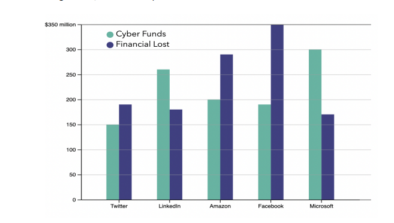
            <br>
        <h4>Variations in data lost as per years in particular sectors</h4>
        <br>
        <p>Here we visualize variations in different sectors per year. We have used a donut chart for this. 
            We represent each sector's share when all sectors are involved in data theft. We are facing 
            some errors in the d3 code, but we have added the expected visualization model at the time of 
            the proposal</p>
        <br>
        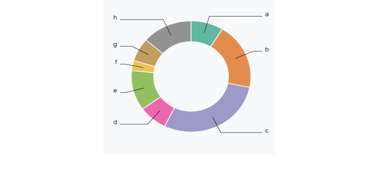
        <br>
        <p>After our prototype design, we almost did everything and had to work on the last visualization. Still, 
            according to a review by Dr. Federico, after seeing our prototype, we realized that we missed the 
            interactions such as mouse hover, and sliding, which makes it easy for the users to understand the 
            data and interact with the visualization. In the next step, we also linked all the visualizations 
            together. We designed it in such a way that all sensitive data that leads to data breaches in various 
            organizations can be shown clearly. If we slide the slider linked to all other graphs indicating years, 
            every piece of information change according to that particular year. What's more interesting is that 
            when we mouse hover anywhere in one chart, similar data is highlighted in the other two graphs. 
            The below visualizations show the changes that we have made</p>
        <br>
        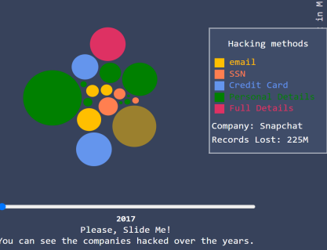
        <br>
        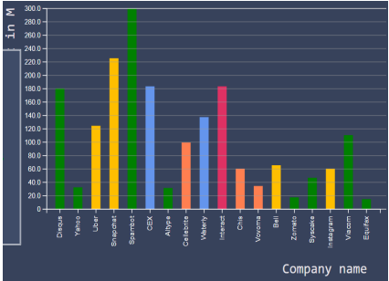
        <br>
        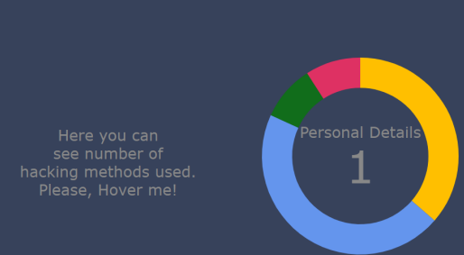
        <br>
        <p>We thought this would be our final destination, but we want to ensure whether our 
            visualizations are going in right direction or not. So, we again discussed with Dr.Federico to 
            explore our visualizations and suggest if we should make any further changes. He then told me 
            one weakness that is missing names for some of the axis/legends. Also, he mentioned that the 
            design of our bubble chart could be more motivating. Another mistake we should have made is 
            we forced the user to scroll through the slides to move from one year to another. After 
            considering all these issues, we have worked on removing the possibility of making 
            comparisons and reducing the information the users can grasp. While doing this, we even had 
            some problems, and with the help of Dr. Federico, we worked on changes that we need to do 
            still, such as the x-axis for the bubble chart, as we missed and used the data in the bar chart and 
            pie chart similar. The second change we worked on is the Onclick event for the same x-axis to 
            change data over the years. Last but not least, we removed text and made sure data should be 
            visualized as graphically as possible</p>
        <br>
        <h3>Implementation</h3>
        <br>
        <p>Here is our final implementation of bubble chart. After all, we tried to show how accounts got 
            hacked by 5 different hacking methods in various organizations year wise from 2018 to 2022.
            </p>
        <br>
        
        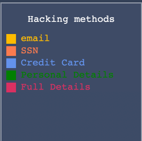
        <br>
        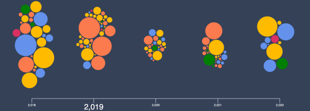
        <br>
        <p>This visualization shows variations of record lost in various sectors . In X- axis we have given 
            company names to show which organizations has lost the data by different type of hacking 
            methods year wise .In y-axis we have used count of record lost in millions. We also used grid 
            cells in order make the data count more clearly.</p>
        <br>
        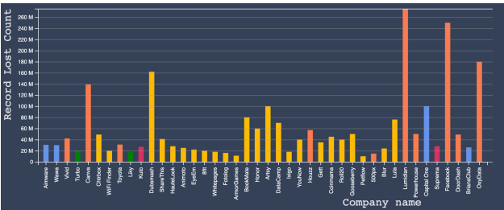

        <br>
        <p>The below donut chart visualization shows total count of each individual hacking methods in 
            given years. So , this pie chart varies accordingly as the data changes according to year</p>
        
        <br>
        <h4>How two charts are connected with each other?</h4>
        <br>
        <p>In below diagram bubble chart and bar chart are interlinked through category-named 
            organizations. So, when we place the cursor at any color of our choice, the bar graph with the 
            same company name is highlighted automatically as it is linked with each other.</p>
        <br>
        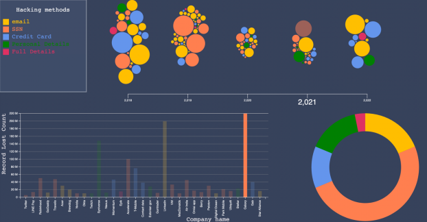
        <br>
        <p>Connection between donut chart and bar chart takes place in below diagram. when I place my
            cursor at donut chart the same data which is linked got highlighted .As , the donut chart shows 
            total count of companies got hacked through email.In Bar chart all the organizations or 
            companies which Is related or linked that is all 24 companies are shown which is in yellow color.
            Even year is common attribute between them, when year changes all the data also varies in both 
            bar and donut chart.All 24 companies are different but the common thing between them is 
            hacking method that is email. Email considered as sensitive data in all 24 companies got 
            highlighted. So , we have interconnected them</p>
        <br>
        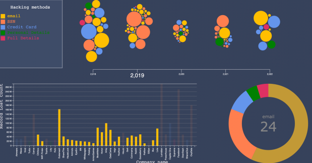

        <br>
        <h3>Overall Visualization</h3>
        <br>
        <h4>For the first visualization:</h4>
        <br>
        <p>The visualization displays how various organizations got hacked from data sensitivity from 2018 
            to 2022. We interactively visualized all of these elements using a Bubble chart.</p>
        <br>
        <h4>Visual encodings:</h4>
        <br>
        <p>The bubble chart we created to display the data breaches in various companies. We accurately 
            translated the data and made the representation so that each component of the map was 
            transparent, and any user could easily comprehend the facts they presented. We all are aware 
            of it each time the data is altered in some way. We need to demonstrate it visually, so things 
            like color, size, grouping, and so forth should be considered—where we tried to accomplish 
            practically everything</p>
        <br>
        <h4>Interaction techniques:</h4>
        <br>
        <p>The mouse hover, tooltip, legends, and tooltip to describing our attributes more interactive 
            make it the most engaging component. We used the color scheme to distinguish the various 
            hacking methods, and the backdrop hue's central theme was to highlight all the charts we used. 
            It draws the focus of every user. We employed Filtering, which enables us to limit or customize 
            the data displayed in the visualization</p>
        <br>
        <h4>Design Quality:</h4>
        <br>
        <p>We followed all the guidelines and reasoned to provide their data interactively to the user. We 
            used five different colors to view hacking types. We also used size as a criterion, as the bubble 
            size is more significant than that particular company has lost more data through hacking. 
            Additionally, we examined all the data per year to visualize the data more clearly; if we didn't 
            mention the years, then the data would be more and look like a huge mess. The data lost in all 
            organizations between 2018 and 2022 and how the data changes are evident in this 
            comparison. And when we place a cursor on the legend, which displays five hacking methods, it 
            shows the accounts that got hacked via a particular data sensitivity method. A unique pop-up 
            dialog box says this. We aim to make the most crucial details stand out the most. Overall, 
            everything went smoothly</p>
        <br>
        <h4> 
            For the second visualization:</h4>
        <br>
        <p>The visualization shows the company name on one side and numerous records lost on the yaxis, showing the data transition. We displayed the variation of data lost per year using a bar 
            chart.</p>
        <br>
        <h4>Visual encodings:</h4>
        <br>
        <p>The representation we tried to show is comprehensive, and an attempt was made to translate the 
            material. To demonstrate it graphically, the use of color and grouping is employed. To make it more 
            user-interactive, a tooltip box shows the company name, category, and count of records lost in number. 
            Also, the data keep changing according to the years</p>
        <br>
        <h4>Interaction techniques:</h4>
        <br>
        <p>The colors were employed to effectively distinguish the hacking type we chose to display. Filtering 
            allowed us to restrict or alter the data shown in the visualization, such as companies and records lost. To 
            draw visitors' attention, we tried to be more interactive by displaying the data variation</p>
        <br>
        <h4>Design Quality:</h4>
        <br>
        <p>We used all available techniques to increase user interaction. The various color’s used to depict 
            the various methods in hacking are well-designed to distinguish between them. Additionally, a 
            new visualization is displayed for each portion of the year when a specific section is selected. 
            They try to highlight the essential elements. Overall, everything went quite smoothly. 
            Additionally, the numbers on the x and y axis are in millions is apparent as well</p>
        <br>
        <h4> 
            For the Third visualization:</h4>
        <br>
        <p>The visualization shows the total count of particular sensitive data with comparison of 
            organizations showing transition of data. We displayed this variation of this count as per year
            using a donut chart.</p>
        <br>
        <h4>Visual encodings:</h4>
        <br>
        <p>The representation we tried to show is comprehensive, and an attempt was made to translate the 
            material. To demonstrate it graphically, the use of color and grouping is employed. To make it 
            more user-interactive, there is a tool-tip box shows count and name of sensitivity data that 
            causing vulnerabilities for hacking Is shown in middle of donut chart. Also, the data keep changing 
            according to years.</p>
        <br>
        <h4>Interaction techniques:</h4>
        <br>
        <p>The colours were employed to effectively distinguish between the hacking type that we chose to
            display. Filtering allowed us to restrict or alter the data shown in the visualization, such as count 
            of organizations that got hacked with similar data sensitivity. To draw visitors' attention, we tried 
            it to be more interactive for showing variation of data</p>
        <br>
        <h4>Design Quality:</h4>
        <br>
        <p>We used all available techniques to increase user interaction. The various color’s used to depict 
            the various methods in hacking are well-designed to distinguish between them. Additionally, a 
            new visualization is displayed for each portion of the year when a specific section is selected. 
            They try to highlight the essential elements. Overall, everything went quite smoothly. 
            Additionally, the numbers on the x and y axis are in millions is apparent as well</p>
        <br>

    
       
        
        <br>
        <h3>Future Scope:</h3>
        <br>
        <p>We will add more data regarding data breaches to make it comprehensive. We are also 
            considering adding a Tool tip for bubbles. So, when we place the cursor in a bubble, we can see 
            the popup of the tooltip, which displays a story of data lost news that happened in a particular 
            year. We will also add more interactive components.</p>
        <h3>References</h3>
           <ol>
                <li><a href="https://www.informationisbeautiful.net/visualizations/worlds-biggest-data-breaches-hacks/" target="_blank">Information is Beautiful - World's Biggest Data Breaches & Hacks</a></li>
                  <li><a href="https://www.ftc.gov/system/files/documents/public_events/1582978/now_im_a_bit_angry-_individuals_awareness_perception_and_responses_to_data.pdf" target="_blank">FTC - Individuals' Awareness, Perception, and Responses to Data</a></li>
                <li><a href="https://www.trendmicro.com/vinfo/es/security/news/cyber-attacks/understanding-targeted-attacks-goals-and-motives" target="_blank">TrendMicro - Understanding Targeted Attacks: Goals and Motives</a></li>
                <li><a href="https://www.statista.com/statistics/273550/data-breaches-recorded-in-the-united-states-by-number-of-breaches-and-records-exposed/" target="_blank">Statista - Data Breaches Recorded in the United States</a></li>
                <li><a href="https://www.ibm.com/reports/data-breach" target="_blank">IBM - Data Breach Reports</a></li>
                <li><a href="https://informationisbeautiful.net/visualizations/top-500-passwords-visualized/" target="_blank">Information is Beautiful - Top 500 Passwords Visualized</a></li>
                <li><a href="https://informationisbeautiful.net/visualizations/ransomware-attacks/" target="_blank">Information is Beautiful - Ransomware Attacks</a></li>
            </ol>

          <p>For a detailed view of the code, check out the GitHub repository:</p>
        <a href="https://github.com/sravani919/Data-Breaches" target="_blank">View the Code on GitHub</a>


        <button onclick="closeProjectDetails('project5-details')">Close Project Details</button>

    </div>

</div>

<!-- Scripts -->
<script>
    function toggleDetails(detailsId) {
        var details = document.getElementById(detailsId);
        var display = details.style.display;
        if (display === 'none') {
            details.style.display = 'block';
        } else {
            details.style.display = 'none';
        }
    }
</script>
<script>
    // Universal function to close project details
    function closeProjectDetails(detailsId) {
        var details = document.getElementById(detailsId);
        if (details) {
            details.style.display = 'none';
        }
    }
</script>